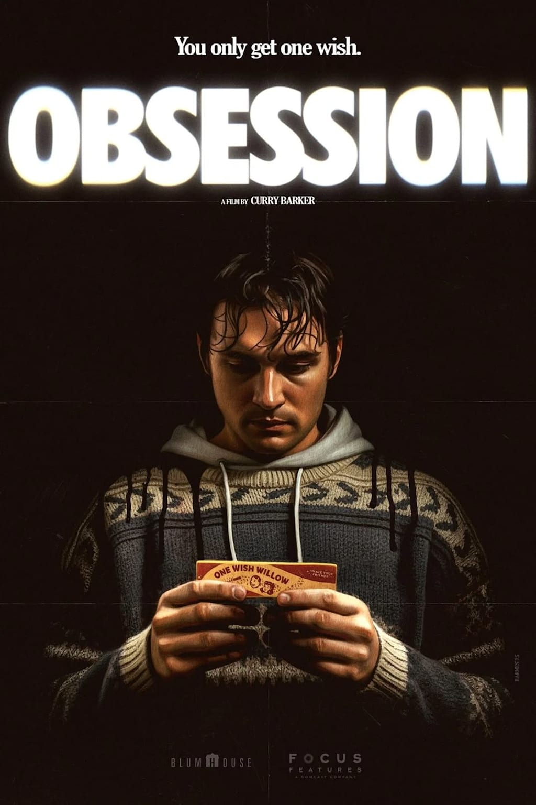
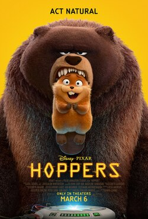
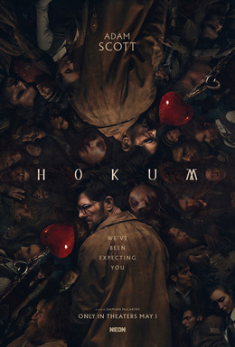
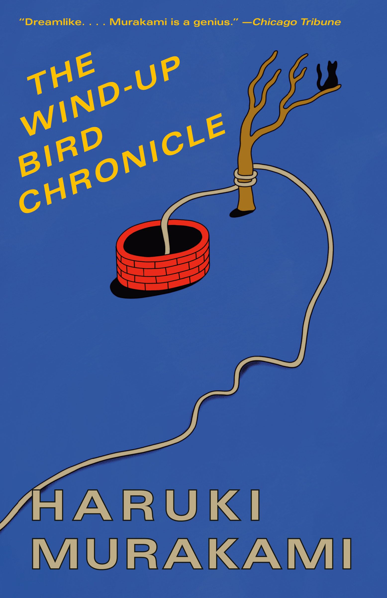

Backrooms
Interesting concept. Atmosphere, score and acting were on point. Writing was a little eh and I don't know how I felt about the ending. But overall, was a thinker and I really liked the cinematography.
A small place for notes on books, movies, essays, albums, or anything else I have been thinking about recently.
Interesting concept. Atmosphere, score and acting were on point. Writing was a little eh and I don't know how I felt about the ending. But overall, was a thinker and I really liked the cinematography.

Wow, the acting was amazing, especially the mood switches, and the soundtrack made it so scary. One of my favourite movies so far this year and would recommend if you like horror.

A nice and cute animated film which was not bad, had some funny moments and a nice message but I felt the ending got too sidetracked and kind of fell flat but was ok.

Was an okay horror flick. Liked the vibe and the tension. Nothing too special but was scary.

Interesting book about a guy who goes through a divorce with other characters that join him and tell him stories about their life. Certainly a very thoughtful book that doesn't tell you how to think about life's experiences but still portrays them in a way that is interesting. If you like Murakami books, I would recommend.

Ryan Gosling and Rocky give a very cool performance where you would normally think that aliens would be an enemy of humans, you start cheering and tearing up because of what happens in this movie. Really liked the songs and the visuals were stunning. Should definitely see if you like scifi.